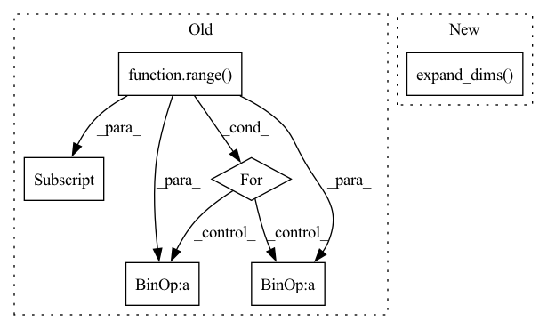

Pattern ID :7030

Before Change
// 创建一副新图，并根据每个像素点的种类赋予颜色
//------------------------------------------------//
seg_img = np.zeros((np.shape(pr)[0], np.shape(pr)[1], 3))
for c in range(self.num_classes):
seg_img[:,:,0] += ((pr[:,: ] == c )*( self.colors[c][0] )).astype("uint8")
seg_img[:,:,1] += ((pr[:,: ] == c )*( self.colors[c][1] )).astype("uint8")
seg_img[:,:,2] += ((pr[:,: ] == c )*( self.colors[c][2] )).astype("uint8")
//------------------------------------------------//
// 将新图片转换成Image的形式
After Change
image = Image.fromarray(np.uint8(seg_img))
elif self.mix_type == 2:
seg_img = (np.expand_dims(pr != 0, -1) * np.array(old_img, np.float32)).astype("uint8")
//------------------------------------------------//
// 将新图片转换成Image的形式
//------------------------------------------------//
In pattern: SUPERPATTERN
Frequency: 4
Non-data size: 6
Instances
Fragment ID: 23388836
Project Name: bubbliiiing/pspnet-pytorch
Commit Name: 373340e315d6e9a029041ec293673c06c3c1cb7e
Time: 2022-03-04
Author: 3323290568@qq.com
File Name: pspnet.py
M Class Name: PSPNet
N Class Name: PSPNet
M Method Name: detect_image(2)
N Method Name: detect_image(2)
M Parent Class: object
N Parent Class: object
M File Name: pspnet.py
N File Name: pspnet.py
M Start Line: 155
M End Line: 172
N Start Line: 115
N End Line: 190
'>
Before Change
_weight = ivy.permute_dims(weight, axes=(2, 3, 1, 0))
_in_chunk = in_channel // groups
_out_chunk = out_channel // groups
for i in range(groups):
_input = ivy.permute_dims(
input[:, int(i * _in_chunk) : int((i + 1) * _in_chunk), :],
axes=(0, 2, 3, 1),
)
out.append(
ivy.conv2d(_input, _weight, stride, padding, dilations=dilation)[
:, :, :, int(i * _out_chunk) : int((i + 1) * _out_chunk)
]
)
out = ivy.concat(out, axis=-1)
if bias is not None:
out = ivy.add(out, bias)
After Change
feature_group_count=groups,
)
if bias is not None:
return ivy.add(ret, ivy.expand_dims(bias, axis=(0, 2, 3)))
return ret
'>
Fragment ID: 23388833
Project Name: ivy-dl/ivy
Commit Name: ac416cf209a682bc9bcede6a04db9cc202dd5f7f
Time: 2022-10-06
Author: sherrytst30@gmail.com
File Name: ivy/functional/frontends/torch/convolution_functions.py
M Class Name: AnonimousClass
N Class Name: AnonimousClass
M Method Name: conv2d(7)
N Method Name: conv2d(7)
M Parent Class:
N Parent Class:
M File Name: ivy/functional/frontends/torch/convolution_functions.py
N File Name: ivy/functional/frontends/torch/convolution_functions.py
M Start Line: 5
M End Line: 45
N Start Line: 13
N End Line: 40
'>
Before Change
// 创建一副新图，并根据每个像素点的种类赋予颜色
//------------------------------------------------//
seg_img = np.zeros((np.shape(pr)[0], np.shape(pr)[1], 3))
for c in range(self.num_classes):
seg_img[:,:,0] += ((pr[:,: ] == c )*( self.colors[c][0] )).astype("uint8")
seg_img[:,:,1] += ((pr[:,: ] == c )*( self.colors[c][1] )).astype("uint8")
seg_img[:,:,2] += ((pr[:,: ] == c )*( self.colors[c][2] )).astype("uint8")
//------------------------------------------------//
// 将新图片转换成Image的形式
After Change
image = Image.fromarray(np.uint8(seg_img))
elif self.mix_type == 2:
seg_img = (np.expand_dims(pr != 0, -1) * np.array(old_img, np.float32)).astype("uint8")
//------------------------------------------------//
// 将新图片转换成Image的形式
//------------------------------------------------//
'>
Fragment ID: 23388909
Project Name: bubbliiiing/hrnet-pytorch
Commit Name: e53724ea45003d8acd5d8b5465fa97038d486824
Time: 2022-03-19
Author: 3323290568@qq.com
File Name: hrnet.py
M Class Name: HRnet_Segmentation
N Class Name: HRnet_Segmentation
M Method Name: detect_image(2)
N Method Name: detect_image(2)
M Parent Class: object
N Parent Class: object
M File Name: hrnet.py
N File Name: hrnet.py
M Start Line: 153
M End Line: 170
N Start Line: 113
N End Line: 188